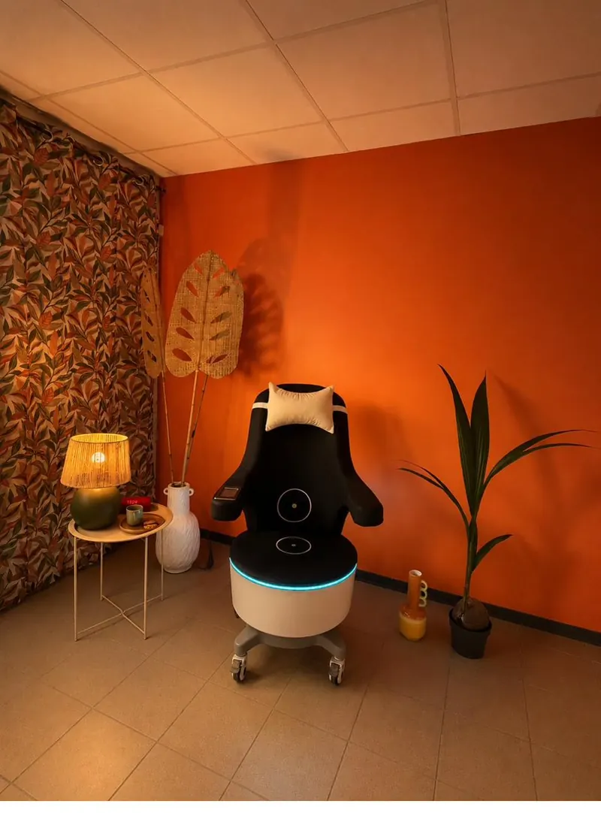

Post-grossesse, ménopause, post-cancer, ou simplement avec l'âge... Les fuites urinaires touchent une femme sur trois et restent un sujet tabou. La Chaise EMS révolutionne le traitement : renforcement profond du plancher pelvien, sans effort, sans douleur. Body Reset est le premier centre en France à la proposer.
Les fuites peuvent survenir à toute étape de la vie d'une femme — et parfois d'un homme. Notre solution est adaptée à toutes les situations.
Après un accouchement, le plancher pelvien est affaibli. La rééducation classique fonctionne mais demande temps et assiduité. La Chaise EMS accélère significativement les résultats — en complément du suivi sage-femme.
La chute hormonale fragilise les tissus pelviens. Fuites à l'effort, urgences mictionnelles s'installent. Le renforcement profond et régulier redonne tonicité et contrôle.
Après chirurgie pelvienne ou prostatectomie, la perte de continence est fréquente. La Chaise EMS est une solution douce, non invasive, validée dans le parcours de récupération.

La Chaise EMS utilise des ondes électromagnétiques focalisées de haute intensité pour stimuler en profondeur les muscles du plancher pelvien. En 28 minutes assise (habillée), vous réalisez l'équivalent de plus de 11 000 contractions de Kegel.
Le protocole standard : 6 séances de 28 minutes étalées sur 3 semaines, puis séances d'entretien selon les besoins. Les résultats sont mesurables dès la 3ème séance pour la majorité des personnes. Aucune éviction sociale, aucun préparatif, aucune douleur — vous restez habillée pendant la séance.
Body Reset est le premier centre en France à proposer cette innovation. Découvrez en détail son fonctionnement.
Depuis ma deuxième grossesse, je vivais avec ces fuites en cachette. 6 séances de Chaise EMS et c'est terminé. Je revis. Je remercie Body Reset.
30 à 60 minutes avec nos expertes pour comprendre votre situation et définir le bon protocole pour vous.
Réserver mon bilan offert →